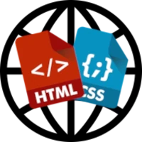

Esse site é feito apenas com Html e Css, e futuramente com JavaScript.
WebData é um site feito por um desenvolvedor front-end iniciante, e tem
como objetivo guardar algumas informações sobre tags entre outras coisas
sobre Html e Css.

Algumas coisas que voce precisa saber
“Eu programo em HTML”
Talvez você já tenha ouvido alguém falar a frase acima. Geralmente ela é dita por pessoas iniciantes ou então aqueles que se baseiam apenas na capa de um único livro da série Head First (use a cabeca), que estampa na capa “programação
em HTML5”.
Acontece que a propria sigla ja entrega seu objetivo:
Hypertext
Markup Language
traduzido para o bom e velho Português
significa Linguagem de Marcação Hipertexto. Você vai notar
daqui a pouco que ela não funciona com instruções, como toda
linguagem de programacdo. A HTML é baseada em marcações
chamadas tags, e elas comandam tudo.
Além disso, o termo “programação” envolve estruturas especializadas que dependem do uso de variaveis simples e compostas,
condições, laços e até coisas mais complexas como objetos. Nada disso existe na
HTML nem nas CSS. Por outro lado, todas essas caracteristicas estao presentes na
linguagem JavaScript. Essa sim é uma Linguagem de Programação.
HTML trabalha fundamentada apenas nas marcas ou etiquetas (do Inglês tag) e as
CSS funcionam baseadas nos seletores, propriedades e valores. Você vai entender
mais sobre isso mais pra frente.
Sendo assim, em breve você tera a base suficiente para conseguir dizer com certeza
que HTML e CSS não são linguagens de programacao.
Para que serve HTML, CSS e JS?
Uma das coisas mais importantes para quem esta comecando o desenvolvimento de
sites é compreender para que serve esse trio de tecnologias, que geralmente sdo
estudados em conjunto. Basicamente, de forma resumida, temos um panorama
simples:
Guarde bem a tabela anterior sempre que voc precisar decidir qual linguagem vai
utilizar em cada situação.
Abra ai o seu site de noticias favorito. Ao abrir uma determinada noticia, vocé vaiver
0 texto, as imagens, os videose todo aquele contetido que compée a noticia em si.
Isso tudo foi criado em HTML.Ela é focada em contetido.
Agora preste atencao nas cores, na posicaéo dos componentes e organizacao visual do
contetdo em colunas, blocos visuais e tudo mais. Tudo foi definido em CSS. Ela é
focada no design/estilo.
Finalmente, provavelmente existe o menu do site. Quando vocé clica nele, acontece
uma animacao. Ao mover o mouse sobre as sessdes, € possivel que acontecam
algumas interac6es interessantes. Isso foi desenvolvido com ajuda de JavaScript. Ela
é uma linguagem focada nas interagées.
____________________________________________
Tags HTML, ai vamos nos
Como eu ja disse anteriormente, a HTML funciona baseada em marcacées especificas
chamadas tags. Uma tag ¢ um conjunto de palavras entre sinais de colchete
angular, conforme representado a seguir.
[FOTO]
Na imagem anterior, vocé consegue perceber o uso da tag
para a criagéo de um
paragrafo simples. A maioria das tags possuem uma abertura e um fechamento, e
vocé identifica isso pela presenga da barra no fechamento da tag.
Além disso, as tags também podem ter atributos e valores, que vao configurar seu
comportamento:
[FOTO]
Uma mesma tag pode ter varios parametros, cada um com seu valor. Entretanto,
algumas tags ndéo possuem a necessidade de contetido interno e por isso nao
possuem fechamento. E o caso, por exemplo, das tags e . Isso é algo
natural, ndo se preocupe com isso agora.
_____________________________
Eu ainda uso , , ,
, ooo
Com o surgimento da verséo 5 da HTML, algumas tags simplesmente deixaram de
existir ou tornaram-se obsoletas. Uma tag obsoleta pode até estar funcionando no
seu navegador hoje em dia, mas a prépria W3C - consércio responsdavel por manter
as especificagdes da linguagem - recomenda que elas nao sejam mais usadas pelos
profissionais e aos poucos nao serdo mais suportadas pelos navegadores nas suas
futuras versdes.
De forma simples e direta (vou até escrever “gritando” aqui, pra dar énfase): NAO
USE TAGS OBSOLETAS NO SEU SITE! Ufa! Que alivio colocar isso pra fora e
_______________________________________________
Chegou a vez dos seletores CSS
Como ja vimos anteriormente, as CSS sdo as Cascading Style Sheets (Folhas de
Estilo em Cascata). Elas séo usadas para configurar um resultado visual dos
elementos HTML.
As configuragdes das CSS sao realizadas através dos seletores. Vamos ver a
aatomia de um seletor.
[FOTO]
O seletor apresentado anteriormente vai configurar o visual dos elementos de
paragrafo do site corrente. O uso das chaves delimita todas as declaracées relativas
ao seletor atual. No seletor que eu te mostrei, serdo feitas trés configuracdes:
* A fonte escolhida foi Arial.
* Otamanho da letra sera 12pt (pontos).
* Acor da letra sera azul.
Note que, ao final de cada declaragao, temos que colocar ponto-e-virgula para
indicar que ela se encerrou.
Todas as propriedades devem ter seu valor, e eles devem ser separados por dois
pontos. Vocé nado é obrigado(a) a usar nenhuma declaracdo especifica. Sd utilize a
propriedade que vocé realmente deseja alterar.
__________________________________________
Estrutura basica de um documento
HTML
Ao criar um novo documento HTML, devemos sempre escrever a estrutura basica de
um documento desse formato. Vamos analisar cada uma das 11 linhas que compé6em
esse documento base.
[FOTO]
Linha 1: Indica que o documento atual sera escrito na versdo mais atualizada da
linguagem (no caso, HTML5)
Linhas 2 e 11: Delimitam o documento HTML, que é sempre dividido em duas
partes: a cabeca e o corpo. Na linha 2, também estamos indicando que o contetido
desse site sera no idioma Portugués do Brasil.
Linhas 3 e 7: Delimitam a cabega da pagina, local onde sao realizadas algumas
configuragées iniciais como formatos, estilos, icone de favoritos, etc.
Linha 4: adiciona ao documento atual o suporte a caracteres acentuados.
Remover essa linha pode causar erros de renderizacdo de algumas letras na tela.
Linha 5: Indica que o conteldo aparecera, por padrao, ocupando todo o espaco
disponivel da tela e com uma escala de 1:1.
Linha 6: Configura 0 titulo da pagina, que aparecera como identificagéo da aba do
navegador, ao lado do favicon.
Linhas 8 e 10: Delimitam o corpo da pagina, a maior porcdo do site, que vai
aparecer na tela. E aqui onde colocaremos todo 0 nosso conteudo.